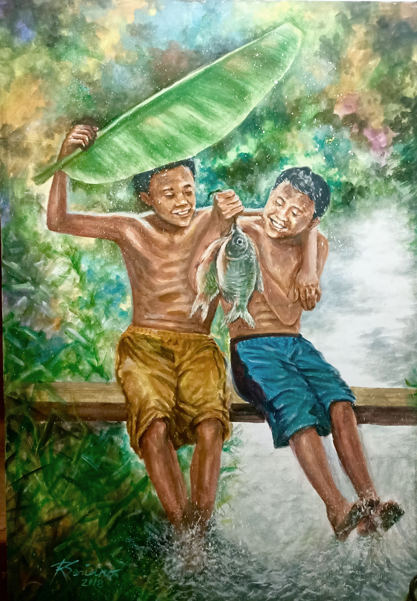
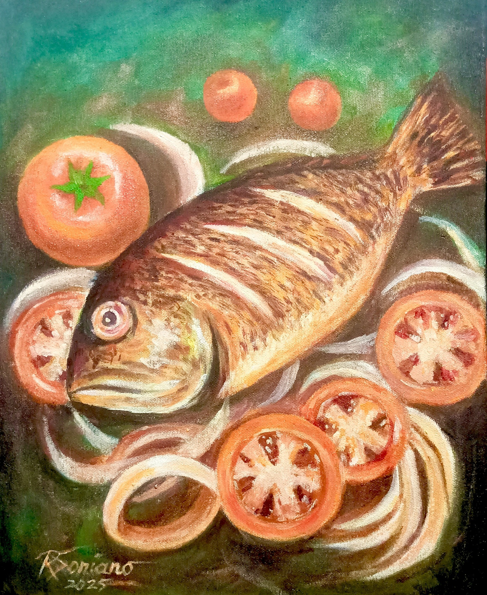
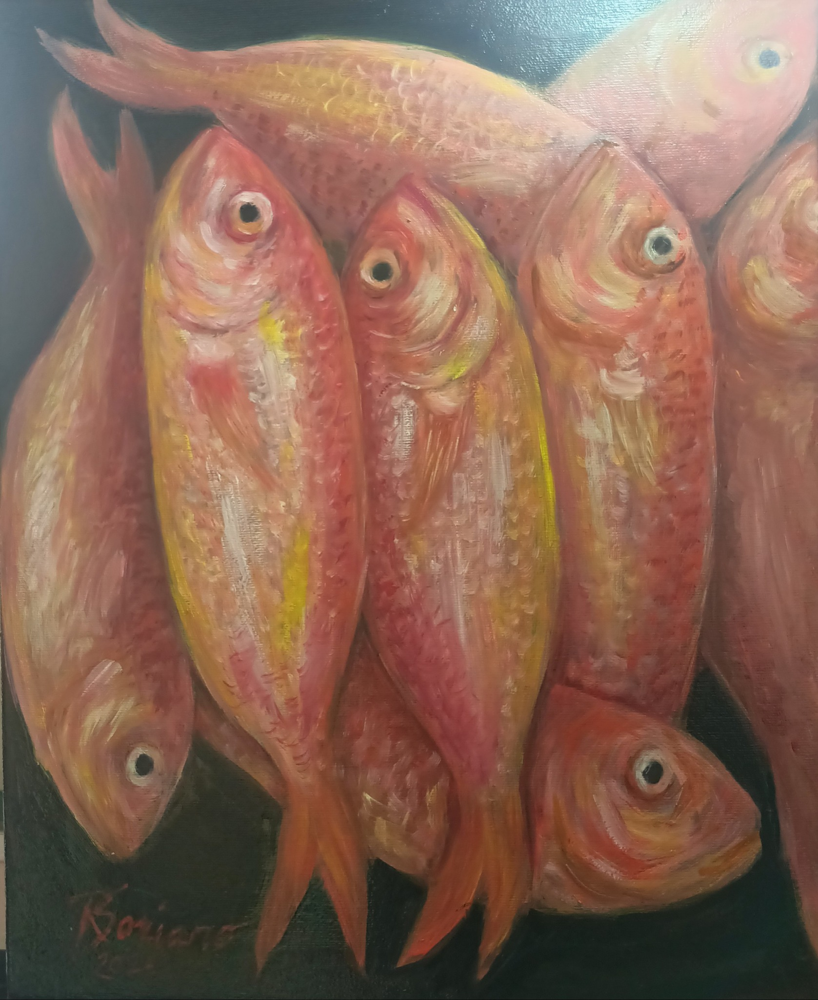
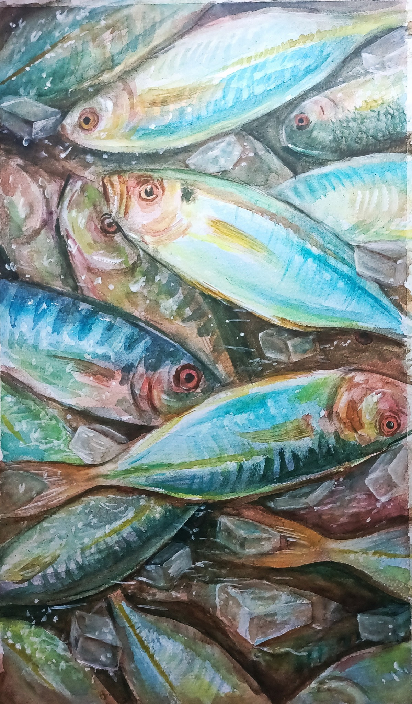
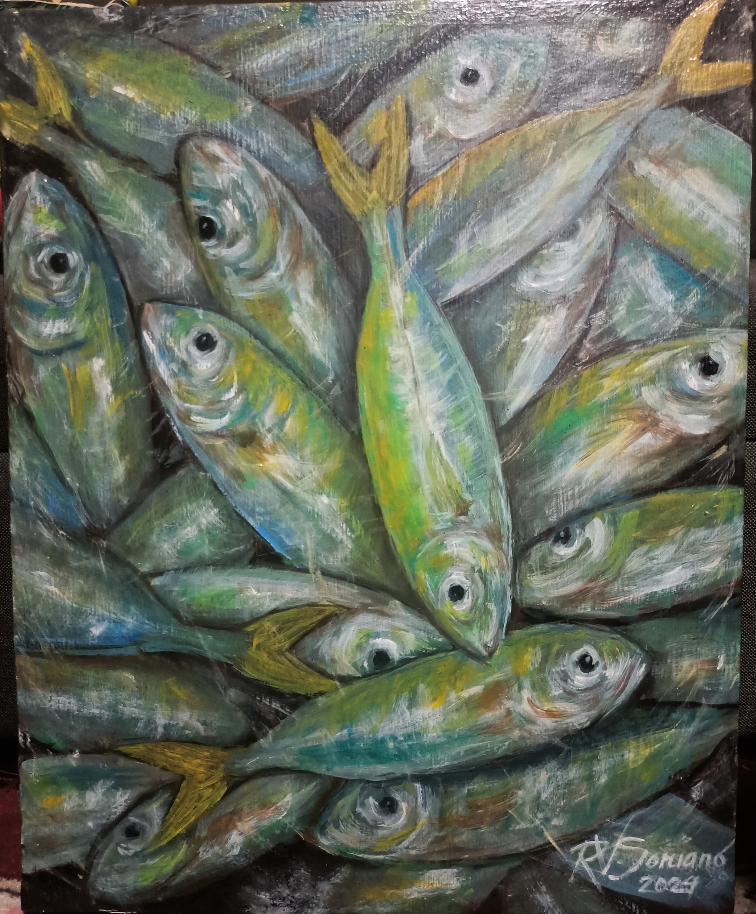

Fish Series: Color, Memory, and Luck on Canvas
What if you could bring the ocean’s energy, color, and a touch of luck into your home? Meet my Fish Series—oil paintings, inspired by the paradise below the waves, Filipino childhood memories, and the promise of abundance. Each piece is a feast for the eyes, a story for the heart, and—believe it or not—a symbol of good fortune!
Why Fish? The Real Story
I chose fish as my subject because the ocean is a living paradise—vibrant, mysterious, and teeming with beauty. The rich colors, the endless variety of shapes and textures, and the graceful dance of fishes and sea plants have always captured my imagination.
But this series is more than art. For me, painting fish is a way to relive my childhood dreams of becoming a great swimmer—dreams that never came true. Instead, I dived deep into the sea using my imagination, bringing the wonders of the ocean to life on my canvas.
Memory, Joy, and Undersea Inspiration
As a child, I used to watch fish swim and play, wishing I could join them. Now, painting the fish series gives me endless joy—I can gaze at these ocean wonders every day, right on my wall! And if someone wishes to bring home a piece of this happiness, my art is always open for the right collector.
Did you know? In Chinese culture, fish (especially koi or golden fish) are a symbol of luck, prosperity, and abundance. No wonder many people love hanging fish art in their dining area, restobar, or even in their offices!
How I Paint: Techniques & Signature Style
Each piece in the Fish Series is painted using oil on canvas—a classic medium that allows me to layer, blend, and create lifelike reflections and textures. I love exploring bold brushwork, glazing for depth, and expressive color to capture the movement and “life” of each fish. Sometimes, I’ll use a palette knife for highlights and that unmistakable “wet look” you’ll notice up close!
Challenges & Satisfaction
Each artwork takes several days, sometimes weeks, depending on the complexity and detail. The biggest challenge? Capturing the shimmer and motion of living fish. There’s always a risk of overworking the paint, so I work with patience and a lot of observation. But nothing beats the feeling when the piece finally “swims” with energy!
Where Does Fish Art Belong?
Fish paintings bring a fresh, calming vibe wherever they’re displayed. Dining room? Perfect! Restobar or café? Instant conversation starter. Office? A touch of nature and prosperity. They’re also a great gift idea—art that’s meaningful, beautiful, and believed to attract abundance.
The Message: Abundance & Gratitude
Through my Fish Series, I want to remind everyone to appreciate nature’s gifts, to find beauty in the simple things, and to believe that abundance is possible. Whether you’re a collector or just a dreamer, may these paintings bring you inspiration, joy, and yes—good luck!
DM me on Art of Rose Facebook or send a message for inquiries!
Do you believe in good luck? Maybe all you need is a little art on your wall to invite it in! Let the Fish Series be your daily inspiration.